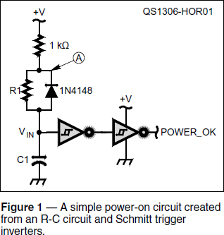
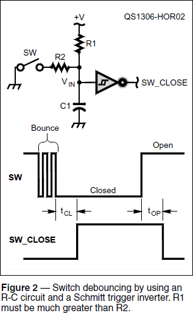
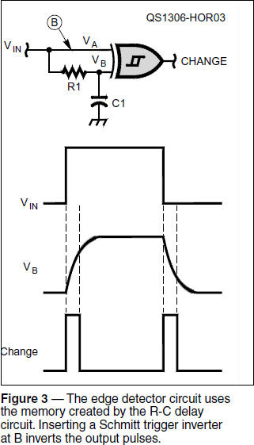

Electronic Circuits
Experiment #125 — The Schmitt Trigger
Once you start building radio gear, you learn that a great deal of “radio” has little to do with RF. This month we’re going to work with one of the non-radio building blocks you’ll encounter when an analog signal and a digital function come together — the Schmitt trigger. Long-time readers may recall the Schmitt trigger making an appearance in Experiment #11 about op-amp comparators.1, 2 Adding positive feedback to the basic comparator circuit creates hysteresis — a switching threshold that changes depending on whether the circuit’s output is on or off. This turns out to be desirable in certain applications.
If you’re not familiar with op-amp comparators, download and read Experiment #11 from the “Hands-On Radio” web page. Page two covers hysteresis and how to design the comparator-based Schmitt trigger with discrete components. If you have an LM311 (or one of the equivalents listed) build a Schmitt trigger circuit and perform the experiment.
The Logic IC Schmitt Trigger
The ability to switch reliably in the presence of noise is a valuable function for digital circuits that have analog signals as inputs. Op-amps and discrete components take up valuable printed circuit board space, so the Schmitt trigger function was packaged into an IC. The basic set of six hex inverters (7414-type or CD4069 ICs) and quad NAND gates (74132 or CD4093) are the most common Schmitt trigger ICs. They are inexpensive and widely available.3
The difference in switching characteristics between standard logic gates and Schmitt triggers can be seen in the device data sheets. Download the Texas Instruments data sheets for the CD4011 (standard quad NAND) and CD4093 ICs from www.datasheetcatalog.org. Look in the dc or Static Electrical Characteristics tables and find the Input Low and Input High voltage specifications for a VDD value of 5 V at 25° C. For the standard gate the typical values of VIH and VIL are 3.5 and 1.5 V, respectively, and the response to an input signal in that 2 V range is undefined. For the Schmitt trigger IC, VN and VP are 1.9 and 2.9 V, only 1.0 V apart — a much smaller switching window — and drawing (b) at the bottom of the CD4093 datasheet’s first page shows the transfer characteristic of the gate. Note that the output voltage is defined for all values of input voltage. Let’s put that to work.
Sensing Slowly Changing Signals
Any device controlled by a microprocessor needs to have a POWER_OK signal to prevent its digital circuits from attempting to operate before the power supply is fully up and running. Such premature operation can yield strange results.
Similarly, when power is lost, the same signal notifies the digital circuits to shut down in a hurry. Specialized power monitoring ICs are available for this task, but the simple circuit in Figure 1 can also do the job.

When power turns ON, capacitor C1 charges slowly through R1, keeping VIN below the buffer’s VP threshold for a time delay of about one time constant, R1 × C1. (The back-to-back inverters form a non-inverting buffer.) After that time, the buffer’s POWER_OK signal goes high to indicate the power supply has had enough time to stabilize. If power is lost at any time during the charging process, or if power is turned OFF after stabilizing, C1 is rapidly discharged through the 1N4148 and the POWER_OK signal goes low.
You can build this circuit using two of the inverters in a 74HC14 IC powered by 5 V. To make it easy to observe the time delay, use a 1 MΩ resistor for R1 and a 1 µF capacitor for C1. The 1 kΩ resistor provides current limiting during the experiment and is small compared to R1, so it has an insignificant effect on the charging time of C1.
Build the power-down detector using a CMOS hex inverter such as the 74HC14 or CD40106. TTL versions (7414 or 74LS14) draw too much current for the 1 MW resistor to act as a pull-up. Also, in a real-world design, the inverter would be powered from a large capa- citor to allow it to hold POWER_OK low for several msec, insuring a controlled shut-down period.
Watching the POWER_OK signal with a voltmeter or oscilloscope, apply power to the circuit and verify that the signal stays low and does not go high until about 1 second has passed. If you connect one end of a clip lead or piece of wire to ground and simulate a power dropout by brushing the other end against the cathode of the diode (point A in Figure 1), the output signal should immediately go low, signifying power is not OK and there should be a 1 second delay before it returns to the OK state. POWER_OK might be used as a reset signal for a digital circuit.
Switch Debouncing
A switch may feel quite solid to you, leaving little doubt that when you close a switch, it instantly closes and stays closed. In truth, the contacts of almost all mechanical switches and relays literally bounce for a few milliseconds before settling down to stay closed. Because digital devices are so fast, software can react to those bounces as multiple switch closings and openings. While it’s possible to “debounce” a switch signal in software, it can be done with hardware, too.
Reconfigure your circuit as shown in Figure 2; only one inverter section is needed here. That wire you just used to simulate a power dropout can also simulate the noisy signal from a switch, or you can use a real momentary switch. The two time delays, tCL and tOP depend on the values of R1 and R2, respectively:

tCL ≈ R2 × C1 and tOP ≈ R1 × C1
Start with R1 = 1 MΩ, R2 = 10 kΩ, and C1 = 1 µF. You’ll need an oscilloscope to see the bounces of the switch contacts and the short delay, tCL.
If you swap R1 and R2, you’ll find that R1 has to be much larger than R2 for SW_CLOSE to go high. If R1 is too small, closing the switch does not discharge C1 below the VN threshold for the inverter because R1 “overpowers” R2 and keeps the capacitor charged to higher than VN. Experiment with different values; you’ll find that R1 has to be about three times larger than R2 to get reliable results.
The squelch function in your radio also requires a continuously changing signal to cause switching at a threshold. If the input signal to R2 is the rectified and filtered output of a receiver’s audio amplifier, the output of the inverter indicates whether a signal is present.
Edge Detectors
In many cases you want to be able to tell when the input signal changes state without having to monitor it continuously. This requires an elementary form of memory that will allow a circuit that can compare “then” to “now.” The circuit in Figure 3 uses a two-input XOR gate to make the comparison and an R-C circuit to create the time delay that acts as memory. The Schmitt trigger input is required because of the slowly changing R-C circuit output.

VA is the “now” state of VIN while VB is the “then” state. An XOR gate’s output is high only when just one of its inputs is high. If both inputs are in the same state — high or low — the output, CHANGE, is also low. During the delay period while C1 is charging or discharging (approximately equal to the time constant R1 × C1), one input lags behind the other so that the XOR function is true and CHANGE is high — but only during the charge/discharge period. The Schmitt trigger action insures that the slowly-changing voltage VB causes only one pulse with every transition of VIN.
You can build the circuit in Figure 3 using one section of a 74HC86 quad exclusive-OR gate with Schmitt trigger inputs. R1 and C1 values of 100 kΩ and 0.01 µF will provide output pulses about 1 msec long. Use a 50% duty- cycle, 5 V pulse output from a function generator or a 555 timer circuit as VIN (don’t use a square wave with a negative voltage) with a repetition rate of about 100 Hz. Vary the time constant of R1-C1 to see the effect on the output pulse width, viewed on an oscilloscope.
Another name for this circuit is a frequency doubler. Two output pulses occur for every input pulse — one at each edge of the input pulse. If you insert a Schmitt trigger inverter at point B, the CHANGE pulses change from positive pulses at each edge to negative pulses.
Shopping List
74HC14 hex inverter
74HC86 quad XOR gate
1N4148 diode
1⁄4-watt resistors: 1 kΩ, 10 kΩ 100 kΩ, 1 MΩ
Capacitors: 0.01 µF, 1 µF (ceramic or electrolytic)
Momentary switch (optional)
1All previous “Hands-On Radio” experiments are available to ARRL members at www.arrl.org/hands-on-radio.
2The Schmitt trigger is named for Otto Schmitt who identified the function when studying properties of squid nerves in the 1930s!
37400-family model ICs are available in many different logic families such as HC, LS, and AC.